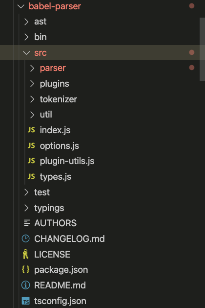
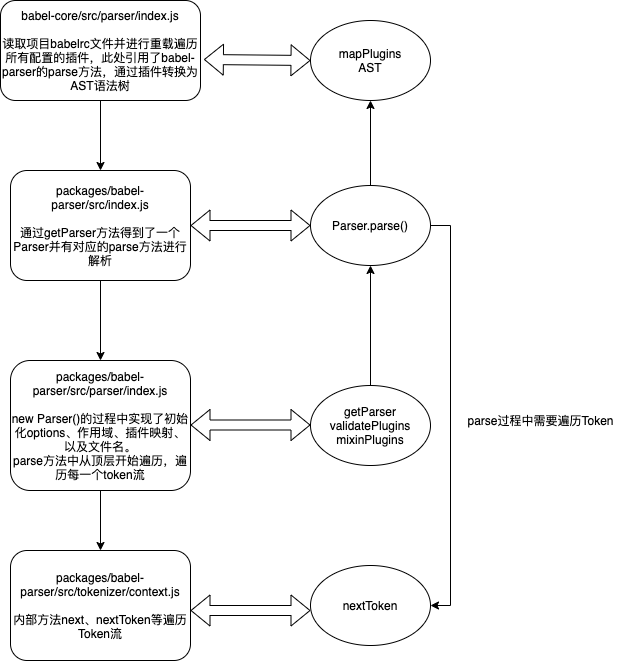
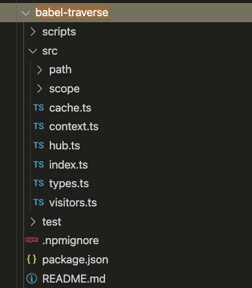

Babel是什么
- Babel是一个通用的多功能的 JavaScript 编译器。此外它还拥有众多模块可用于不通形式的静态分析。
- Babel是JavaScript编译器，更确切的说时源码到源码的编译器，通常也叫做”转换编译器(transplier)”。
- 意思时说你为Babel提供一些 JavaScript代码，Babel更改这些代码，然后返回给你新生成的代码。
Babel解析的三个步骤
- 解析(parse)
- 词法分析阶段 把字符串形式的代码转换为令牌(token)流
- 语法分析阶段会把一个令牌流转换成AST的形式。这个阶段会使用令牌中的信息把它们转换成一个AST的表述结构，这样更易于后续的操作。
- 转换(transform)
- 转换步骤接收AST并对其进行遍历，在此过程中对节点进行添加，更新及移除等操作。
- 生成(generate)
- 代码生成步骤把最终(经过一系列转换之后)的AST转换成字符串形式的代码，同时还会创建源码映射(source maps)。
- 代码生成其实很简单：【深度优先】遍历整个AST，然后构建可以表示转换后代码的字符串。
AST抽象语法树
babel会将以下代码转化为抽象语法树。
- http://astexplorer.net/
1
2
3function square(x) {
return x * x;
}1
2
3
4
5
6
7
8
9
10
11
12
13
14
15
16
17
18
19
20
21
22
23
24
25
26
27
28
29
30
31
32
33
34
35
36
37
38
39
40
41
42
43
44
45
46
47
48
49
50
51
52
53
54
55
56
57
58
59
60{
"type": "Program",
"start": 0,
"end": 38,
"body": [
{
"type": "FunctionDeclaration",
"start": 0,
"end": 38,
"id": {
"type": "Identifier",
"start": 9,
"end": 15,
"name": "square"
},
"expression": false,
"generator": false,
"async": false,
"params": [
{
"type": "Identifier",
"start": 16,
"end": 17,
"name": "x"
}
],
"body": {
"type": "BlockStatement",
"start": 19,
"end": 38,
"body": [
{
"type": "ReturnStatement",
"start": 23,
"end": 36,
"argument": {
"type": "BinaryExpression",
"start": 30,
"end": 35,
"left": {
"type": "Identifier",
"start": 30,
"end": 31,
"name": "x"
},
"operator": "*",
"right": {
"type": "Identifier",
"start": 34,
"end": 35,
"name": "x"
}
}
}
]
}
}
],
"sourceType": "module"
}
深度优先算法
- 简单来说 深度优先算法 顾名思义 就是走到深度不能再走了 然后返回上一层 继续遍历
- 算法图示 https://visualgo.net/zh/dfsbfs
- 我们一起来看道简单的深度优先算法题 来更好的理解深度优先算法。
- 题目链接 https://leetcode-cn.com/problems/maximum-depth-of-binary-tree/
- 二叉树的最大深度
1
2
3
4
5
6
7
8
9
10
11
12
13
14
15
16
17/**
* @param {TreeNode} root
* @return {number}
*/
var maxDepth = function(root) {
// 递归法
// 确认递归参数和返回值
const getDepth = (node) => {
// 确认跳出条件
if (!node) return 0;
const left = getDepth(node.left);
const right = getDepth(node.right);
let depth = 1 + Math.max(left, right);
return depth;
}
return getDepth(root);
};访问者模式(Visitors)
- 二叉树的最大深度
- 访问者时一个用于AST遍历的跨语言的模式，简单的说它们就像是一个对象，定义了用于在一个树状结构中获取具体节点的方法，这么说有些抽象，我们来看一个例子
1
2
3
4
5const MyVisitor = {
Identifier() {
console.log('Called');
}
}分析Babel源码中的三个步骤 解析、转换、生成
解析(parse)
- 一层层往上找，发现写在了babel-parse中的这个包中
- babel/packages/babel-core -> babel/packages/babel-core/src/parser/index.ts -> babel/packages/babel-parser -> babel/packages/babel-parser/src/index.js
可以看到babel的parser具体如何解析是放在了getParser中，根据不同的输入，返回不同的解析器。1
2
3
4
5
6
7
8
9
10
11
12
13
14
15
16
17
18
19
20
21
22
23
24
25
26
27
28
29
30
31
32
33
34
35
36
37
38
39
40
41
42
43
44
45
46export function parse(input: string, options?: Options): File {
if (options?.sourceType === "unambiguous") {
options = {
...options,
};
try {
options.sourceType = "module";
const parser = getParser(options, input);
const ast = parser.parse();
if (parser.sawUnambiguousESM) {
return ast;
}
if (parser.ambiguousScriptDifferentAst) {
try {
options.sourceType = "script";
return getParser(options, input).parse();
} catch {}
} else {
ast.program.sourceType = "script";
}
return ast;
} catch (moduleError) {
try {
options.sourceType = "script";
return getParser(options, input).parse();
} catch {}
throw moduleError;
}
} else {
return getParser(options, input).parse();
}
}
function getParser(options: ?Options, input: string): Parser {
let cls = Parser;
if (options?.plugins) {
validatePlugins(options.plugins);
cls = getParserClass(options.plugins);
}
return new cls(options, input);
}Parser类中加上构造函数一共三个方法1
2
3
4
5
6
7
8
9
10
11
12
13
14
15
16
17
18
19
20
21
22
23
24
25
26
27
28
29
30
31
32
33
34
35
36
37// packages/babel-parser/src/parser/index.js
export default class Parser extends StatementParser {
constructor(options: ?Options, input: string) {
options = getOptions(options);
super(options, input);
this.options = options;
this.initializeScopes();
this.plugins = pluginsMap(this.options.plugins);
this.filename = options.sourceFilename;
}
getScopeHandler(): Class<ScopeHandler<*>> {
return ScopeHandler;
}
parse(): File {
this.enterInitialScopes();
const file = this.startNode();
const program = this.startNode();
this.nextToken();
file.errors = null;
this.parseTopLevel(file, program);
file.errors = this.state.errors;
return file;
}
}
function pluginsMap(plugins: PluginList): PluginsMap {
const pluginMap: PluginsMap = new Map();
for (const plugin of plugins) {
const [name, options] = Array.isArray(plugin) ? plugin : [plugin, {}];
if (!pluginMap.has(name)) pluginMap.set(name, options || {});
}
return pluginMap;
} - constructor
- 初始化选项、插件Map表以及文件名
- getScopeHandler
- 控制上下文作用域
- parse
- 进入上下文作用域
- 初始化文件和程序的开始节点
- 到下一个令牌 babel/packages/babel-parser/src/tokenizer/index.js
- 从顶部开始遍历AST
- 如果有错误捕获错误
- 返回file
我们重点需要了解一下nextToken, parseTopLevel里做了什么
nextToken
1
2
3
4
5
6
7
8
9
10
11
12
13
14
15
16
17
18
19
20
21
22export default class Tokenizer extends ParserErrors {
curContext(): TokContext {
return this.state.context[this.state.context.length - 1];
}
nextToken(): void {
const curContext = this.curContext();
if (!curContext.preserveSpace) this.skipSpace();
this.state.start = this.state.pos;
if (!this.isLookahead) this.state.startLoc = this.state.curPosition();
if (this.state.pos >= this.length) {
this.finishToken(tt.eof);
return;
}
if (curContext === ct.template) {
this.readTmplToken();
} else {
this.getTokenFromCode(this.codePointAtPos(this.state.pos));
}
}
}我们可以看到nextToken了做了到下一个token的操作，Tokenizer这个类中就是在处理令牌流，将语句全部转换为令牌流。
parseTopLevel
1 | // babel/packages/babel-parser/src/parser/statement.js |
我们可以看到parseTopLevel时Parser继承自它的父类StatementParser的一个方法，调用完成后返回了一个finishNode方法执行，我们看下finishNode做了哪些事
1 | // babel/packages/babel-parser/src/parser/node.js |
finishNode调用了finishNodeAt的方法，返回了一个node，
因为node是一个泛型，我们结合上面的AST语法树，可以看到node返回的大概是如下这么一个东西，有type、start、end、body这些东西
1 | { |
我们稍微看下types中默认放了哪一些nodeType
1 | // babel/packages/babel-parser/src/types.js |
找到了这俩，我们也明白babel是通过解析不同的nodeType类型，返回不同的赋值，具体的解析过程，babel放在了不同的plugin中，最后解析成AST。
解析流程图
Babel解析步骤
getParser() => Parser.parse() call nextToken => AST

从解析步骤可知 babel的转换transform在plugins中进行，也就是说一切的babel转换都在plugin，同时开发人员配置的option和plugins会覆盖重载掉默认的babel配置。
转换(transform)
packages/babel-core/src/parser/index.ts
我们还是从parse入手,可以看到会遍历用户的插件
1 | import type { PluginPasses } from "../config"; |
packages/babel-core/src/config/full.ts
在config中找到关于PluginPasses的定义 并且在该文件中我们可以看到实例化插件instantiatePlugin的一些关键代码，可以看到引用的babel-tranverse中的traverse方法来进行转换

1 | import traverse from "@babel/traverse"; |
参考资料
[1]function*